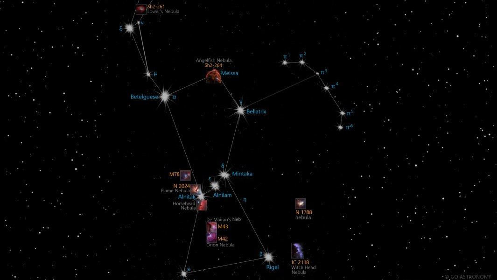
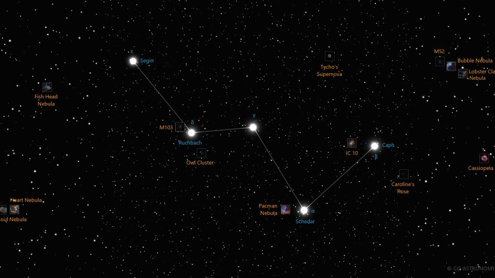
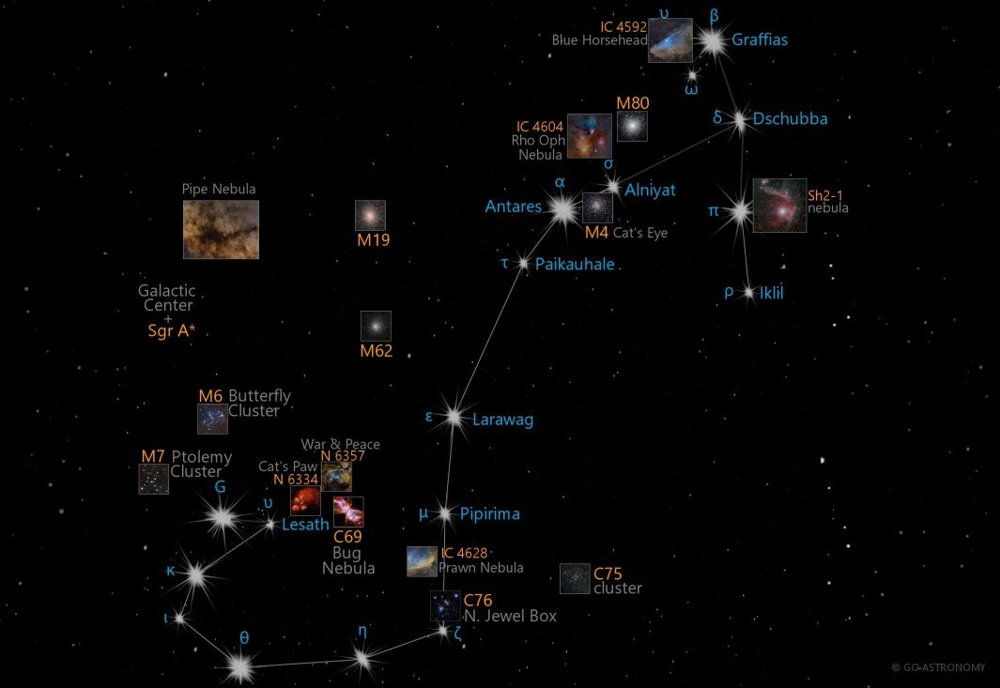

The Constellations
Explore the 88 modern constellations recognized by the IAU.

Orion
Orion is one of the most recognizable constellations in the night sky, representing a hunter from
Greek mythology, one legend goes like orion is infatuated with Pleiades (the seven sisters) but bull (Taurus) was placed in sky to protect Pleiades from Orion (the seven sisters) hence Taurus and Orion can be seen as facing each other in the sky, also Pleiades (a bright star cluster) can be seen behind the Taurus. According to Robert Bauval (Egyptian Researcher) the three Pyramids of Giza (the Great Pyramid of Khufu, the Pyramid of Khafre, and the Pyramid of Menkaure) are laid out on the ground in a pattern that mimics the three stars of Orion's Belt. Orion is notable for its bright stars, such as Betelgeuse and Rigel, and the Orion
Nebula, a stellar nursery visible to the naked eye.

Cassiopeia
Cassiopeia is a distinctive 'W'-shaped constellation named after the vain queen Cassiopeia (in Greek
mythology) Cassiopeia boasted about her unrivaled beauty, claiming she and her daughter Andromeda were more beautiful than the Nereids (sea nymphs), This angered the Poseidon, who sent a sea monster to ravage her land and placed her in the sky as a constellation. In Finnish mythology, Cassiopeia was known as LintuKoto (The Bird Home), It was placed in sky where Birds went to escape the harsh winter (as Cassiopeia is prominent in winter sky). This constellation is easily visible in the northern sky and contains several notable
deep-sky objects, including the open cluster M52 and the Heart and Soul Nebulae.

Scorpius
Scorpius is a prominent constellation located in the southern sky, in Greek mythology it is associated with the scorpion sent by Gia to kill Orion, gods placed them on opposite sides of the sky to keep them apart. In Polynesian culture, Scorpius is known as "Maui's Fishhook" It was believed to be the magical hook used by the demigod Maui to pull up the islands from the ocean floor (Northen Islands of New Zealand). In chinese mythology it represents the dragon's heart and is the symbol of power and strength. It features the bright star Antares, known as the heart of the scorpion, and several deep-sky objects like the Butterfly Cluster and the Cat's Paw Nebula.
.jpg)
Ursa Major
Ursa Major, also known as the Great Bear, is a large constellation in the northern sky. It is best
known for the Big Dipper asterism, which forms part of the bear's body. In Greek mythology, Ursa Major is associated with Callisto, a nymph who was transformed into a brear by Hera, Zeus placed her in the sky to protect her from Hera's wrath, By Native American (Iroquois) it was thought as a great bear being chased by three hunters, the bear is killed every fall and it's spirit returns to the sky each spring, In Hindu mythology, It is Known as Saptarishi, representing seven great sages (rishis), The Big Dipper is a useful tool for finding the North Star, Polaris which remains stationry is the sky and points to the true north direction, polaris is the part of a fainter constellation Ursa minor (lesser bear). For centuries sailors have been using polaris to find direction in night sky. In case you're in South hemisphere, you can use the Crux (cross in the sky) to find south.